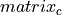

LDS.LDS.ds package¶
Submodules¶
LDS.LDS.ds.dynamical_system module¶
Originally the class comes from inputlds.py file.
-
class
LDS.LDS.ds.dynamical_system.DynamicalSystem(matrix_a, matrix_b, matrix_c, matrix_d, **kwargs)¶ Bases:
objectCreates LDS.
Inits DynamicalSystem with four matrix args and adds possibility of additional keywords in arguments.
 - matrix_a
- matrix_a - process noise- matrix_c
- process noise- matrix_c - sensor noise.
- sensor noise.If a matrix_a is a number, transforms it into float and makes d-state vector equal to 1. If a matrix_a is square y x y, set d equal to y. If a matrix_b is a number, transform it into float and set n-input vector equal to 1. matrix_b can’t take place in case of single numbered matrix_a. If matrix_b is a matrix, number of its columns is assigned to n. If matrix_c is a number, transform it into float and set m-observation vector equal to 1. matrix_c can be a number only if matrix_a is a number too. If matrix_c is a matrix, number of its rows is assigned to m. matrix_d can’t be not zero number if matrix_b is a matrix. Number of columns of matrix_d must be equal to n.
- :param : Evolution, system, transfer or state matrix.
Shape nxn.
:param : Control matrix. :param %Processing noise. Shape nx1. Shape of covariance matrix nxn.%: :param : First derivative of the observation
direction(aka design matrix F(nxm)). Shape mxn.
:param : Feedthrough matrix. :param %Sensor noise or observational error. Shape mx1. Shape of covariance matrix mxm.%:
- Optional arguments
process_noise – Processing noise w.
observation_noise – Observation noise v.
timevarying_multiplier_b
corrupt_probability
- Raises
KeyError – in case of no additional keywords.
Exits in case of wrong format of a matrix. –
Exits in case of not square matrix_a. –
Exits in case of having any matrix_b, but matrix_a is a number. –
Exits if number of rows of matrix_b isn't equal to d. –
Exits if matrix_c is a number, but matrix_a is not. –
Exits if number of columns of matrix_c is not equal to d. –
Exits if matrix_b is a matrix, but matrix_d is not zero number. –
Exits if number of columns of matrix_d is not equal to n-input vector. –
-
check_input(operator)¶ Checks variable type of matrices A,B,C,D.
- Parameters
operator – Number or a matrix.
- Returns
1
- Raises
TypeError – This error occurs if the argument is none of possible formats.
-
solve(h_zero, inputs, t_t, **kwargs)¶ Finds outputs of LDS. The function is used in filters to find the error of prediction.
t_t must be an integer greater than 1. Length of h_zero array must be equal to self.d(number of arrays in matrix A) if matrix_a is matrix If self.n-input vector is 1(matrix_b is a number), self.inputs will be transformed to a columns with t_t size. If matrix_b is matrix, inputs must have n x t_t size. If self.process_noise has Gaussian distribution, we create it with size d x t_t. If it isn’t of Gaussian, we create matrix of zeros. If self.observation_noise has Gaussian distribution, we create it with size m x t_t. If it isn’t of Gaussian, we create matrix of zeros. If it’s wasn’t given in init, we put earlies_event_time to zero.
- Parameters
h_zero – 1x2 array.
inputs – Array of zeros of t_t size.
t_t – Time horizon.
- Optional arguments
earliest_event_time
- Raises
Exits if t_t is 1 or a float. –
Exits if matrix_a is a number, but h_zero can't be transformed into float. –
Exits if length of h_zero isn't equal to d(if matrix_a is matrix) –
Exits if self.n==1, but inputs don't have a size of t_t. –
Exits if matrix_b is a matrix, but inputs don't have n x t_t size. –